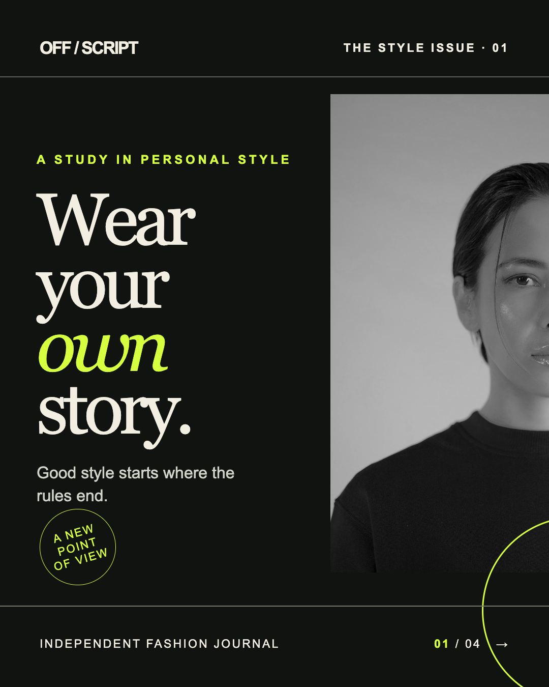
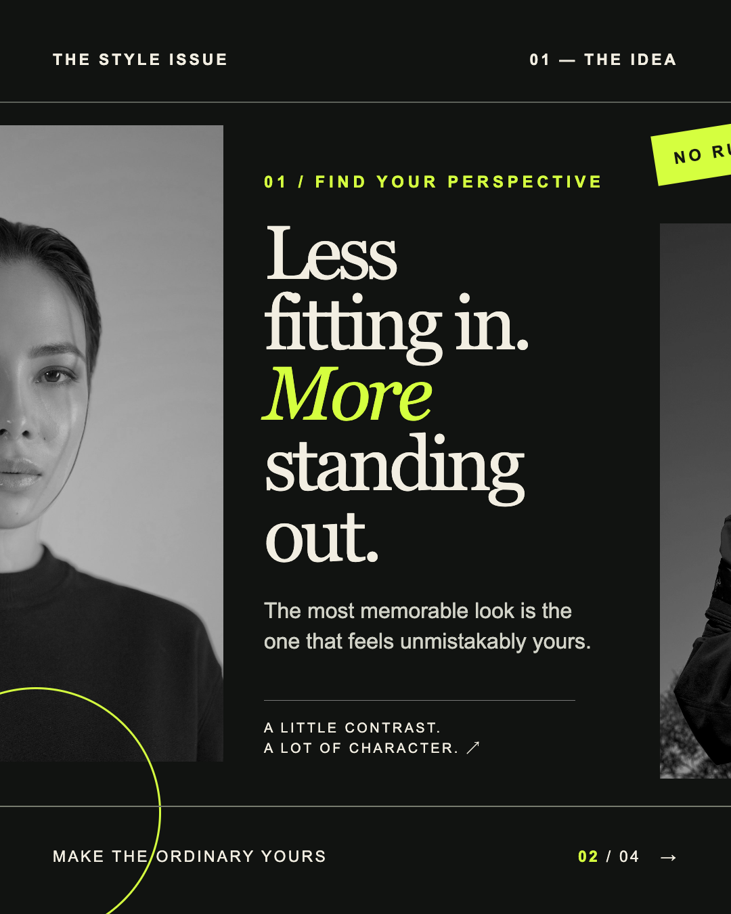
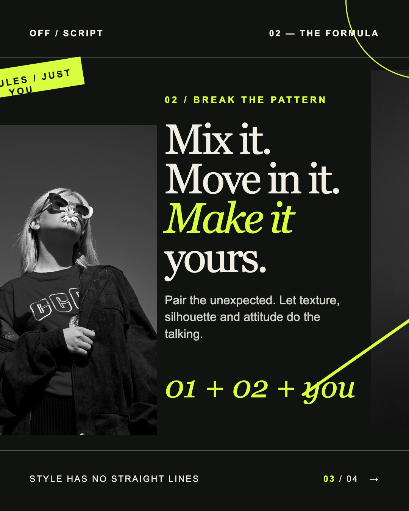
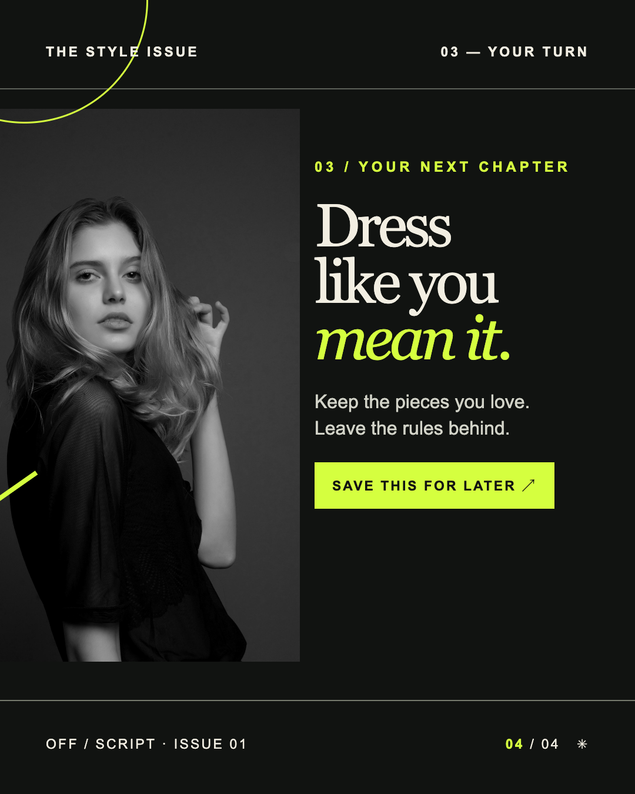

offscript.journalEditorial preview




offscript.journal Style has no straight lines. Wear your own story.
A fictional editorial created for this preview.
The style issue · 01
Swipe through the editorial to see how the images and details carry across each edge.




offscript.journal Style has no straight lines. Wear your own story.
A fictional editorial created for this preview.